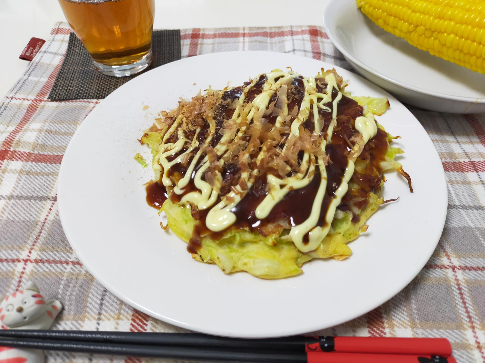

業スーのお好み焼き粉でお好み焼き
材料・金額
| 材料 | 購入金額 | 使用量 | 金額 | kcal |
|---|---|---|---|---|
| お好み焼き粉1kg | 246 | 100g | 25 | 344 |
| 水 | - | 150cc | - | - |
| 卵1pac | 192 | 1個 | 19 | 76 |
| 豚小間320g | 375 | 160g | 188 | 421 |
| キャベツ1玉1,700g | 205 | 200g | 24 | 49 |
| ねぎ3本 | 214 | 1/2本 | 36 | 9 |
| ごま油 | - | 小1 | - | 37 |
| お好み焼きソース （トッピング） |
- | 大2 | - | 46 |
| マヨネーズ （トッピング） |
- | 大2 | - | 168 |
| かつお節 （トッピング） |
102 | 1pac | 17 | - |
| 合計 | - | - | 309 | 1,150 |
| 1食分（合計×0.5） | - | - | 155 | 575 |
作り方
- お好み焼き粉と水をよく混ぜる
- 1.に卵も入れて混ぜる
- キャベツは千切りに、ネギは小口切りにして2.にいれる
- フライパンにごま油を熱し、キッチンペーパーで薄くのばし、タネの半量を流し入れる
- 4.に豚小間の半量を広げながらのせ、弱火でフタをして焼く
- 生地が固まって焼き色がついてきたら裏返し、フタをして豚肉がカリッとするまで焼く
- 豚肉がカリッとし、油が出てきたら、もう一度裏返し、底面がこんがりしたらできあがり
振り返り
業務スーパーのお好み焼き粉1kg、なかなか消費できません。まだ半分あります。茹でとうもろこしを添えて、1人1食200円程度の食卓でしょうか。
同じタイミングで購入したとうもろこしのうち2本を、昨日は塩水をしみこませてから、レンジでチンしていただきました。
今日は、塩水を沸かして茹でたのですが、同じとうもろこしなのに全然味が違いました…。茹でた方が圧倒的に美味しいことに、驚きです。